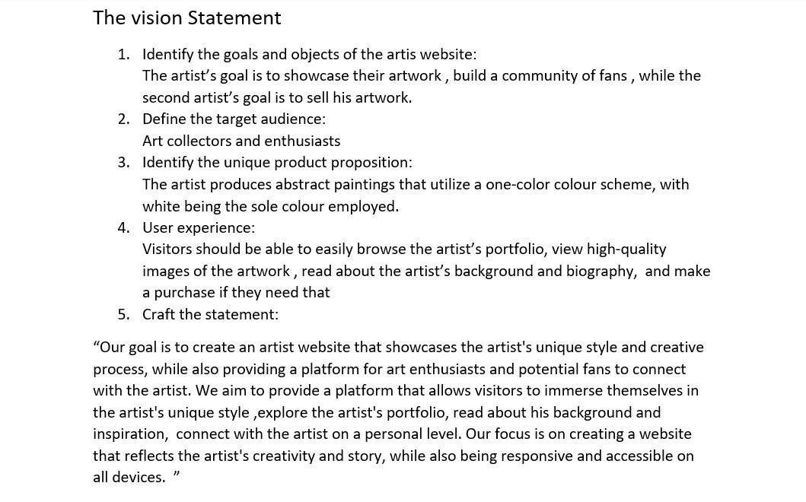

After conducting interviews with Erion, our client, we proceeded to create an empathy map based on insights gained from the interview.
This map helped us understand Erion's perspectives, needs, and challenges more deeply.
Additionally, we conducted thorough research, prepared interview questions and surveys, and collected valuable data.
Our vision statement, crafted collaboratively with Erion, serves as our guiding light throughout the project. This vision statement ensures that our efforts remain focused on delivering a solution that aligns with Erion's aspirations and meets the needs of the target audience.


Persona's
Furthermore, we utilized the insights gathered from Erion's interview to create personas, allowing us to better empathize with our users and tailor our solutions to meet their specific needs. This comprehensive approach ensured that our development process was informed, user-centered, and focused on delivering meaningful results.
High-fidelity prototype
In the Develop and Deliver phases, we proceeded with user testing after finalizing the prototype. Following this, I implemented the code using HTML, CSS, and JavaScript. During the Deliver phase, the focus shifted towards documenting the code . This involved creating comprehensive documentation to ensure clarity and facilitate maintenance. Finally, the project was delivered to the stakeholders. Git lab project link _